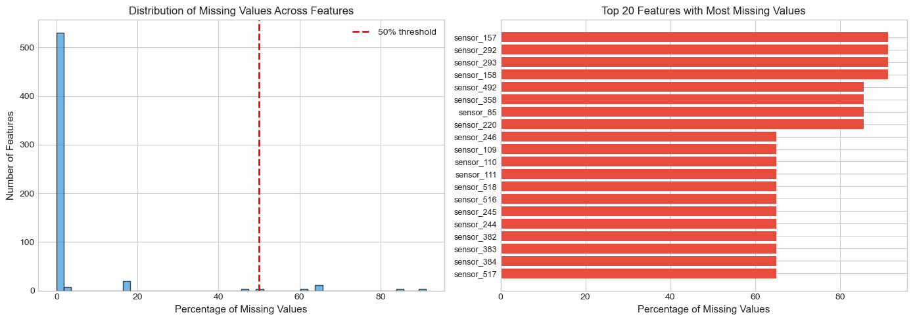
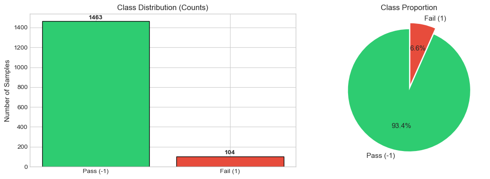
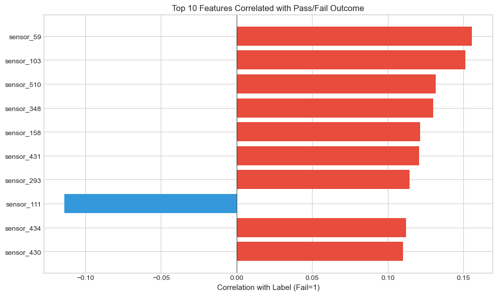
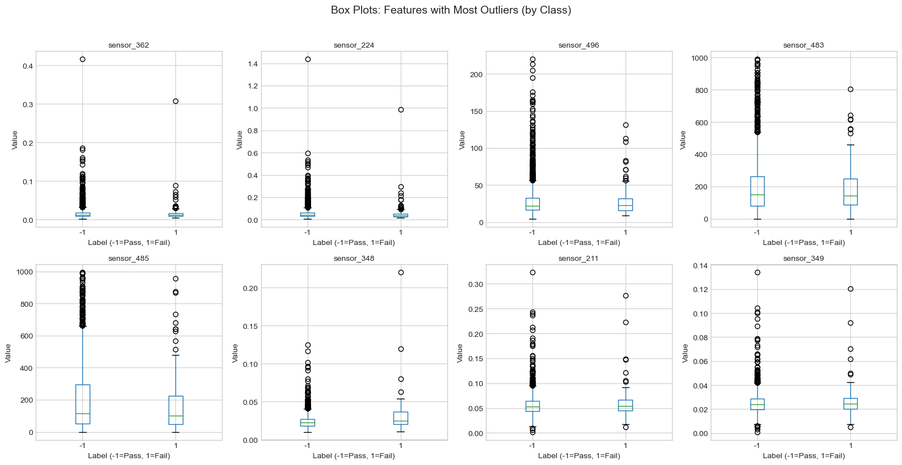

WaferGuard ML
Sprint 1: SECOM Dataset Exploration
Deloitte AI Team
2026-02-01
What is SECOM Data?
Sensor data from a semiconductor manufacturing process.
- 590 sensor measurements per production entity
- 1,567 samples (wafers/chips)
- Binary outcome: Pass (-1) vs Fail (1)
- Source: UCI Machine Learning Repository
Real-world sensor data is notoriously “messy” and redundant
The Challenge
- High-dimensional sensor data (590 features)
- Severe class imbalance (~93% Pass, ~7% Fail)
- Significant missing values across features
- Many redundant/correlated sensors
Dataset Overview
| Attribute | Value |
|---|---|
| Samples | 1,567 production entities |
| Features | 590 sensor measurements |
| Labels | Pass (-1) / Fail (1) |
| Collection Period | 89 days (Jul-Oct 2008) |
Missing Value Analysis

Missing Value Distribution
- Features with ANY missing: 538 out of 590 (91%)
- Features with >50% missing: 28 features
- Average missing per sample: 26.8 features (4.5%)
Strategy: Drop features with >50% missing; impute the rest
Descriptive Statistics

Constant Features
Some sensors show zero variance (useless for prediction).
- Example:
sensor_5= 100.0 for all samples - These provide no discriminative power
- Must be identified and removed
Class Distribution

Class Imbalance
The dataset is heavily skewed towards “Pass”.
| Class | Label | Frequency |
|---|---|---|
| Pass | -1 | ~93% |
| Fail | 1 | ~7% |
Risk: A model predicting “Pass” everywhere achieves 93% accuracy but fails the objective.
Correlation Analysis

Feature Correlations
- Many sensors are highly correlated
- Redundant features increase model complexity
- Strategy: Remove one of each highly correlated pair (|r| > 0.95)
Additional Analysis

Feature Distribution

Preprocessing Strategy
- Cleaning:
- Remove constant features (Zero Variance)
- Remove high missingness columns (>50%)
- Feature Reduction:
- Address multicollinearity (|r| > 0.95)
- Consider PCA
Handling Imbalance
To enable effective defect detection:
- Stratified Sampling: Maintain 7% failure rate in splits
- SMOTE: Generate synthetic failure examples
- Class Weights: Penalize missing a failure more heavily
Next Steps
- Execute preprocessing pipeline
- Baseline Model Training (Logistic Regression / Random Forest)
- Evaluate using Recall and F1-Score (Accuracy is misleading here)
Dataset Summary
- 1,567 Production Samples
- 590 Sensor Features
- Binary Pass/Fail Labels
- 89 Days of Production Data
Data Quality Assessment
- ⚠️ Significant Missing Values (91% of features affected)
- ⚠️ Constant Features Present
- ⚠️ Severe Class Imbalance (93/7 split)
- ✅ Preprocessing Pipeline Defined
- ✅ Ready for Model Development
WaferGuard ML - SECOM